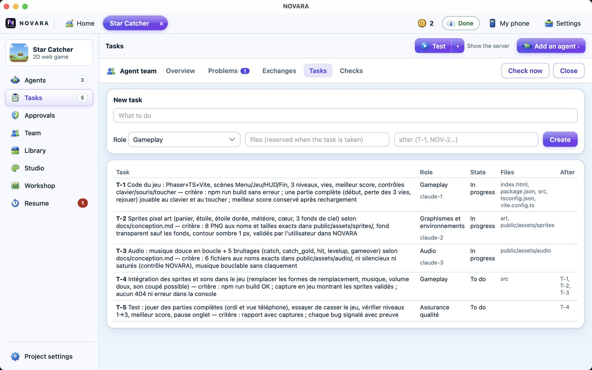

A real team of agents
A coordinator (the mayor of your town) turns your objective into tasks with clear acceptance criteria, then recruits up to four agents at once — gameplay, graphics, audio, levels, QA… Agents reserve the files they edit, report problems to each other with proofs, and never approve their own work.
- Tasks, dependencies and checks in one place
- Team messages, open problems, restore points
- Pick the models: economical, balanced or maximum quality
